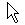

| Home · All Classes · Modules · QSS HELP · QSS 案例 · VER007 HOME |
该QCursor类提供一个鼠标光标具有任意形状。More...
A Qt.CursorShape可用于每当一个QCursor预计。
该QCursor类提供一个鼠标光标具有任意形状。
这个类主要用来创建与特定的小部件关联的鼠标光标，并获取和设置鼠标光标的位置。
Qt拥有一系列标准光标形状，而是根据你也可以自定义光标形状QBitmap，口罩和热点。
一个游标，窗口小部件，使用相关联QWidget.setCursor（ ） 。以一个游标的所有部件（通常为很短的时间内） ，使用关联QApplication.setOverrideCursor（ ） 。
要设置光标形状的使用QCursor.setShape（ ）或使用QCursor构造函数需要的形状作为参数，也可以使用在定义的预定义光标中的一个Qt.CursorShape枚举。
如果你想创建一个游标与自己的位图，或者使用QCursor构造函数，它接受一个位图和口罩或这需要一个像素图作为参数的构造函数。
设置或获取鼠标光标的位置使用静态方法QCursor.pos（）和QCursor.setPos（ ） 。
Note:这是可能的前创建QCursorQApplication，但它不是只是作为一个佔位之后创建一个真正的QCursor有用QApplication。尝试使用之前创建的QCursorQApplication会导致系统崩溃。
在X11上， Qt支持Xcursor库，它允许全彩色图标主题。下表显示了用于每个游标名Qt.CursorShape值。如果游标不能使用下面的名称被发现，一个标准的X11光标将被代替使用。注： X11并没有对所有可能提供适当的游标Qt.CursorShape值。这可能是一些游标将取自Xcursor主题，而另一些将使用的内部位图的光标。
| Shape | Qt.CursorShape Value | Cursor Name | Shape | Qt.CursorShape Value | Cursor Name |
|---|---|---|---|---|---|
|  | Qt.ArrowCursor | left_ptr |  |
Qt.SizeVerCursor | size_ver |
 |
Qt.UpArrowCursor | up_arrow |  |
Qt.SizeHorCursor | size_hor |
 |
Qt.CrossCursor | cross |  |
Qt.SizeBDiagCursor | size_bdiag |
 |
Qt.IBeamCursor | ibeam |  |
Qt.SizeFDiagCursor | size_fdiag |
 |
Qt.WaitCursor | wait |  |
Qt.SizeAllCursor | size_all |
 |
Qt.BusyCursor | left_ptr_watch |  |
Qt.SplitVCursor | split_v |
 |
Qt.ForbiddenCursor | forbidden |  |
Qt.SplitHCursor | split_h |
 |
Qt.PointingHandCursor | pointing_hand |  |
Qt.OpenHandCursor | openhand |
 |
Qt.WhatsThisCursor | whats_this | Qt.ClosedHandCursor | closedhand | |
| Qt.DragMoveCursor | dnd-move or move | Qt.DragCopyCursor | dnd-copy or copy | ||
| Qt.DragLinkCursor | dnd-link or link |
构造一个游标默认的箭头形状。
构造一个光标指定shape。
See Qt.CursorShape对于形状的列表。
See also setShape（ ） 。
构造一个自定义位图的光标。
bitmap和mask补位图。hotX和hotY定义游标的热点。
If hotX是否定的，它被设置为bitmap().width()/2。如果hotY是否定的，它被设置为bitmap().height()/2。
光标bitmap（B）和mask（M ）位组合是这样的：
使用全局Qt的颜色Qt.color0绘制0像素和Qt.color1绘制1像素的位图。
有效的光标的大小取决于显示硬件（或底层窗口系统） 。我们建议采用32 ×32的游标，因为这个大小是所有平台都支持。有些平台还支持16×16 ， 48 ×480和64×64的游标。
Note:在Windows CE上，光标的大小是固定的。如果像素映像大于系统的大小，它会被缩放。
See also QBitmap.QBitmap（）和QBitmap.setMask（ ） 。
构造一个自定义的像素图的光标。
pixmap是图像。这是通常给它一个口罩使用（集QPixmap.setMask（））。hotX和hotY定义游标的热点。
If hotX是否定的，它被设置为pixmap().width()/2。如果hotY是否定的，它被设置为pixmap().height()/2。
有效的光标的大小取决于显示硬件（或底层窗口系统） 。我们建议采用32 ×32的游标，因为这个大小是所有平台都支持。有些平台还支持16×16 ， 48 ×480和64×64的游标。
Note:在Windows CE上，光标的大小是固定的。如果像素映像大于系统的大小，它会被缩放。
See also QPixmap.QPixmap（）和QPixmap.setMask（ ） 。
构造游标的副本c。
构造一个Qt光标从给定的Windowscursor。
Warning:此功能仅适用于Windows。
See also handle（ ） 。
返回光标的位图，或者0 ，如果它是标准的游标之一。
返回光标的热点，或（ 0 ， 0 ） ，如果它是标准的游标之一。
返回光标的位图掩码，或者0 ，如果它是标准的游标之一。
返回游标像素图。这是唯一有效的，如果游标是一个像素图的光标。
返回光标（热点）在全球屏幕坐标的位置。
您可以致电QWidget.mapFromGlobal（）把它翻译出来给小部件的坐标。
See also setPos（ ）QWidget.mapFromGlobal（）和QWidget.mapToGlobal（ ） 。
移动光标（热点）向全球屏幕位置（x，y） 。
您可以致电QWidget.mapToGlobal（ ）翻译小工具坐标转换为全局屏幕坐标。
See also pos（ ）QWidget.mapFromGlobal（）和QWidget.mapToGlobal（ ） 。
这是一个重载函数。
移动光标（热点），以点在全局屏幕位置p。
将光标设置到确定的形状shape。
See Qt.CursorShape为光标形状列表。
See also shape（ ） 。
返回光标形状标识符。返回值是一个Qt.CursorShape枚举值（转换为int ） 。
See also setShape（ ） 。
| PyQt 4.10.3 for X11 | Copyright © Riverbank Computing Ltd and Nokia 2012 | Qt 4.8.5 |